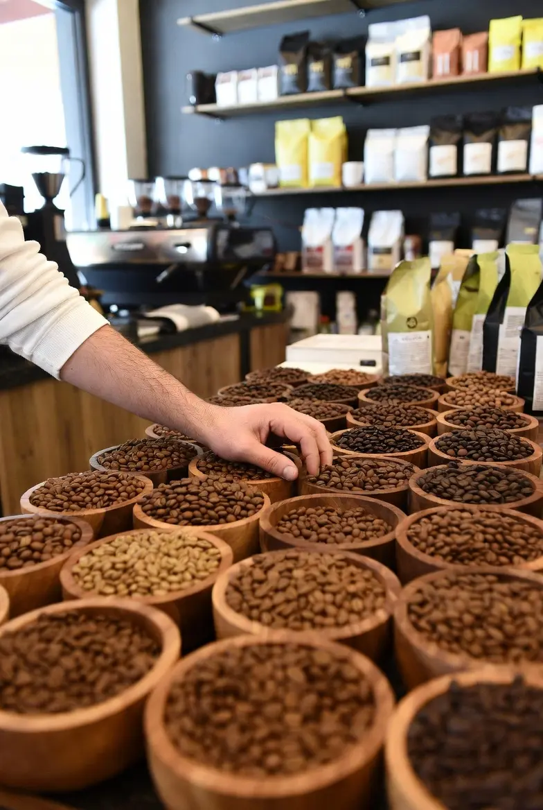
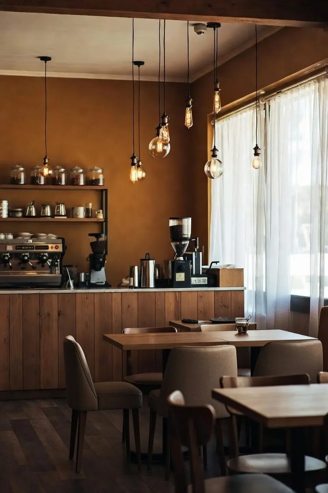

Enjoy my Time
Fresh coffee • Delicious snacks • Warm welcome

Not Just Any Bean, Every Bean Tells a Story
Our Coffee Curator knows great coffee has no shortcuts. A lifelong explorer with deep knowledge of terroir and cultivation, she travels relentlessly to discover the most dedicated and innovative growers in Latin America, East Africa, and Southeast Asia. We partner only with farmers who truly respect the bond between bean and land. Through collaboration with Rainforest Alliance and ongoing dialogue with producers, we support sustainable practices and ensure consistent quality. These relationships demand time and dedication—we believe they’re essential. Our beans grow at high elevations in nutrient-rich soil, hand-picked at peak ripeness. This superior quality pairs perfectly with our precise roasting.

Not Just a coffee shop
Friction is where time slows down. A small corner in the city with warm lights, soft cushions, and the quiet aroma of freshly roasted beans. No rush, no noise—just good coffee, honest conversations, and space to breathe. We source every bean with care, roast it ourselves, and serve it with heart. Come for the drink, stay for the feeling.